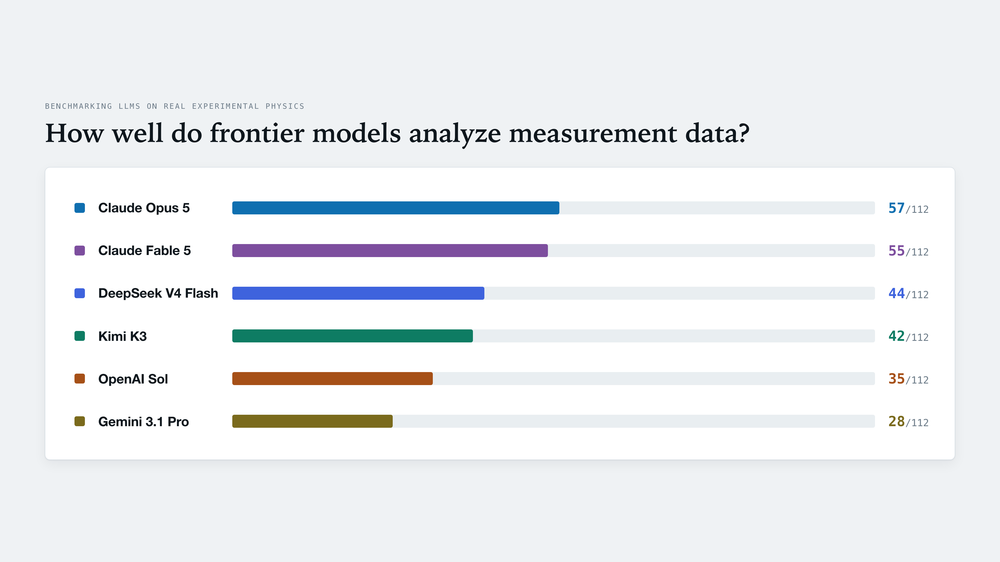

How well do frontier AI models analyze measurement data?
Most of the models spotted an issue in my data that I had overlooked.
I tested six advanced models on a real experimental data analysis task from my lab. There was no extra setup, just 16 datasets from four measurement campaigns on a Josephson junction array, all focused on one question: what does magnetic frustration do to this system? This is an open question, not a benchmark, so there is no answer key. To make progress, you have to notice things like gate voltages drifting between sessions, field calibration changing between campaigns, and charge puddles filling unevenly and shifting features in the phase map. These are the tricky details that people often miss or get wrong.
The top-performing model scored 57 out of 112 on my rubric.
Still, most of the models pointed out a data-quality problem that I had missed. It probably would have taken me a long time to notice it on my own. I was surprised, and it was great to see a basic model with no device knowledge give me a real insight about my own data. Claude Opus scored 80/112 with the full harness I designed for the experiment.
The scoreboard
The rubric is worth 112 points, with scores of 0, 1, or 2 per item, covering aspects of analysis from apparatus comprehension to how it checks the uncertainty of the fits. Here is how the different models performed:

Nobody is close to finishing the task. Most of the models skipped the hard part of fitting the data using a well-known theoretical analysis; the one that did dropped it after attempting once. This type of analysis is good for seeding the hypotheses but not nearly enough for full-scale analysis.
My take from this small experiment is that LLMs prefer simple heuristic analysis to actual publication-worthy research. I believe a properly built harness could push them towards solid, well-grounded analysis of the experimental data.
The funniest thing that happened
Each model could ask an oracle, which is a separate agent with access to the
full device knowledge base but allowed to disclose only factual system
parameters. At one point, probably out of frustration, GPT-5.6 Sol sent the
oracle a single command: oracle --help. No question or context,
just a call for help.
Surprises along the way
DeepSeek is incredibly cheap and smart: about $0.04 for a full run compared to $4.72 for Opus, which is a hundred times less, and in third place after Claude models.
Kimi K3 grades as strictly as I do, so I can use it to score other tests. Gemini was way off, and I was not happy with its results.
I also tried oh-my-pi running DeepSeek, since some people say it makes a big difference over the base model. It scored 41, while DeepSeek alone scored 44 on the same model, task, and oracle. There was no improvement either way. Based on this run, the claim of a big improvement is not supported.
What I think I got wrong
Before I ran this eval, I set up the harness assuming the bare model knew nothing about the experiment and needed to be taught everything, like a graduate student who knows undergraduate physics but not how to do research. Even though Opus scored 80/112 with the full harness, after seeing how the bare models performed, I think that assumption was wrong.
The approach of building a harness should be tailored to each model. Figure out where a model is strong and where it falls short, then build support around its weaknesses and reduce that support as the model improves. This is similar to what Boris Cherny suggests in his interview with Y Combinator, which I recommend watching before you start your next agent workflow or harness. I wish I had watched it earlier.
Next, I intend to run an ablation study on the harness to determine which components are crucial and which can be dropped entirely.
Overall, I am not impressed by how much of the task the models could finish. Still, the bare models showed me something about my own data that I had missed. Both outcomes are valuable results.
The full scoreboard with the evidence behind every score is here.